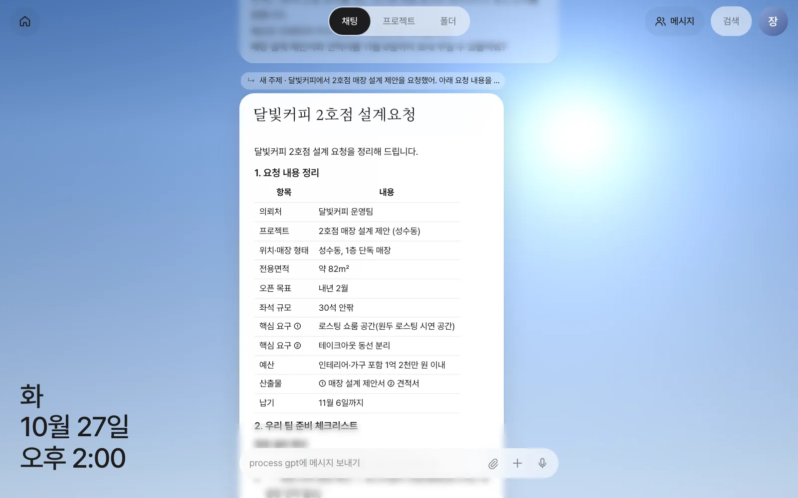
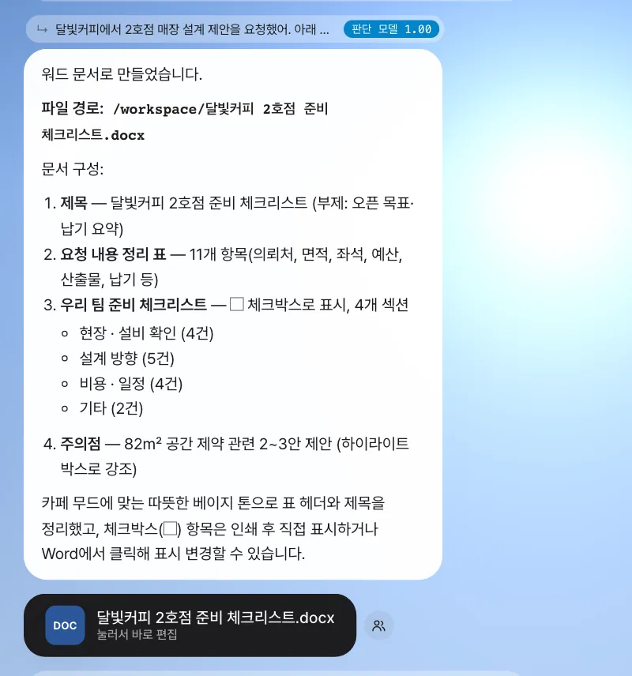
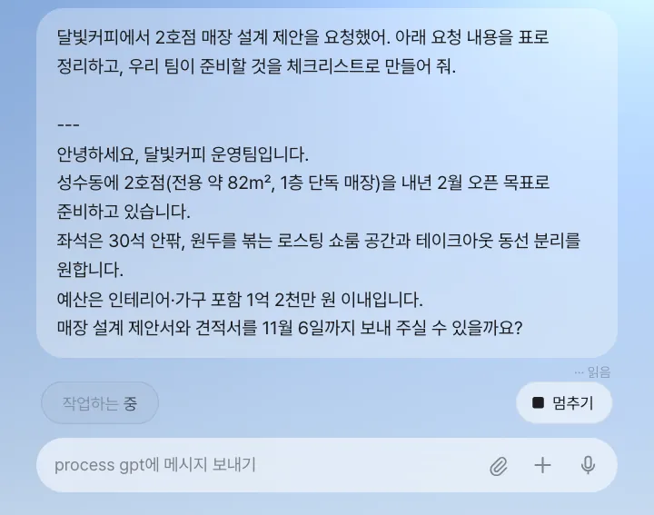

달빛커피가 보낸 2호점 설계 요청을 비서에게 붙여 넣고, 요청 정리표와 준비 체크리스트를 받은 뒤, 그것을 워드 파일로 만들게 합니다. 비서가 일하는 동안 무엇이 보이는지, 답이 어떤 카드로 돌아오는지, 기다리는 동안 자리를 비워도 되는지를 익힙니다.
이 장의 상황#
화면을 둘러봤으니 이제 첫 일을 맡깁니다. 월요일 오후, 장진영 팀장에게 달빛커피 운영팀의 요청이 들어왔습니다. 성수동에 2호점을 여는데, 매장 설계 제안서와 견적서를 11월 6일까지 달라는 내용입니다. 제안서를 쓰기 전에 먼저 요청을 빠짐없이 정리하고, 팀이 준비할 것부터 챙기려고 합니다. 이 정도 일은 비서에게 맡기면 됩니다.
비서는 무엇을 하나#
입력창에 보낸 말은 먼저 어떤 종류의 일인지 가려집니다. 대부분의 일(묻기, 정리, 문서 쓰기, 분석)은 Process GPT의 AI 에이전트가 맡고, 사이트에 로그인해야 하는 일은 브라우저 에이전트(6장)가, “매일 아침 8시에…” 같은 일은 예약(11장)이, “패널 만들어 줘”는 패널 앱(12장)이 맡습니다. 어디로 보낼지 고르는 일은 비서가 하므로, 여러분은 그냥 말로 시키면 됩니다.
에이전트는 혼자 쓰는 작업 공간을 가지고 있어서, 답만 하는 게 아니라 파일을 직접 만들고 고칩니다. 만든 파일은 대화에 카드로 올라옵니다.
따라 하기 1 — 요청 정리와 체크리스트#
- 홈 버튼을 눌러 홈을 접습니다(대화가 넓게 보입니다).
- 입력창에 아래 내용을 붙여 넣고 ↑(보내기)를 누릅니다. 줄을 바꾸려면 Shift+Enter, 보내기는 Enter입니다.
달빛커피에서 2호점 매장 설계 제안을 요청했어. 아래 요청 내용을 표로 정리하고, 우리 팀이 준비할 것을 체크리스트로 만들어 줘.
---
안녕하세요, 달빛커피 운영팀입니다.
성수동에 2호점(전용 약 82㎡, 1층 단독 매장)을 내년 2월 오픈 목표로 준비하고 있습니다.
좌석은 30석 안팎, 원두를 볶는 로스팅 쇼룸 공간과 테이크아웃 동선 분리를 원합니다.
예산은 인테리어·가구 포함 1억 2천만 원 이내입니다.
매장 설계 제안서와 견적서를 11월 6일까지 보내 주실 수 있을까요?
보내자마자 내 메시지 아래에 ··· 읽음이 붙고, 입력창 위에 “생각하는 중”, “작업하는 중” 같은 상태 줄이 흐리게 나타납니다. 에이전트가 파일을 읽으면 “파일 살펴보는 중”, 문서를 만들면 “문서 만드는 중”, 웹을 찾으면 “찾아보는 중”처럼 지금 하는 일로 바뀝니다.
실습에서는 이 요청에 1~2분 걸렸습니다. 답이 오면 이렇게 보입니다.

확인할 것: 답 위에 “↳ 새 주제 · 달빛커피에서 2호점…” 줄이 있고, 그 아래 제목이 붙은 문서 카드(이번 실행에서는 “달빛커피 2호점 설계요청”)가 있습니다. 카드 안에 위치·면적·좌석·예산·납기가 표로 정리되어 있고, “현장·설비 확인 / 설계 방향 / 비용·일정 / 기타”처럼 묶인 체크리스트가 있으면 됩니다. 제목, 묶음 이름과 항목 수는 실행할 때마다 조금씩 다릅니다.
답은 세 가지 모양으로 온다#
| 모양 | 언제 | 어떻게 보나 |
|---|---|---|
| 말풍선 | 짧은 답 | 그대로 읽습니다 |
| 문서 카드 | 제목(#)으로 시작하거나, 목록이 많은 긴 답 |
윗부분만 보이고, 아래 ⌄ 를 누르면 펼쳐집니다 |
| 파일 카드 | 에이전트가 파일을 만들었을 때 | 누르면 편집기가 열립니다 (아래 따라 하기 2) |
답 위의 “↳ …” 줄은 이 답이 어느 대화에 속하는지 표시합니다. 처음 꺼낸 이야기라 “새 주제”로 시작했습니다. 이 줄의 뜻은 4장에서 자세히 봅니다.
따라 하기 2 — 워드 파일로 받기#
정리는 좋은데, 팀원에게 돌리려면 파일이 필요합니다. 같은 대화에 이어서 말합니다.
이 체크리스트를 워드 문서로 만들어 줘. 파일 이름은 "달빛커피 2호점 준비 체크리스트.docx"로 해 줘.
“이 체크리스트”라고만 해도 됩니다. 비서가 이 말이 바로 앞 달빛커피 이야기의 후속이라는 것을 알아듣습니다.

확인할 것: 「DOC」 아이콘이 붙은 파일 카드 달빛커피 2호점 준비 체크리스트.docx 가 있고 “눌러서 바로 편집”이라고 쓰여 있으면 됩니다. 카드를 누르면 화면 안에서 이음오피스 편집기가 열립니다. 편집기에서 직접 고치거나, 열어 둔 채 “설계 방향에 조명 계획을 한 줄 추가해 줘”처럼 말로 고치는 방법은 7장에서 다룹니다. 카드 옆의 사람 모양 버튼은 팀원에게 보내는 공유 버튼입니다(14장).
잘 시키는 법
- 재료를 함께 주세요. 요청 메일 원문처럼 근거가 될 글을 붙여 넣으면 지어내지 않고 그 안에서 정리합니다. 파일은 📎 버튼이나 끌어다 놓기로 붙입니다(50MB까지).
- 결과의 모양을 말하세요. “표로”, “체크리스트로”, “워드 파일로, 이름은 …”처럼 말하면 그 모양으로 옵니다. 한글(hwpx)·엑셀(xlsx)·파워포인트(pptx)도 됩니다.
- 한 번에 다 하려 하지 마세요. 정리 → 확인 → 파일로, 처럼 나눠 시키면 중간에 방향을 바로잡기 쉽습니다.
- 입력창의 🎙 버튼을 누르면 말로 받아쓰기도 됩니다.
기다리는 동안#
긴 일은 몇 분 걸립니다. 그동안 할 수 있는 것과 없는 것입니다.
- 자리를 비워도 됩니다. 일은 브라우저가 아니라 서버에서 돕니다. 따라 하기 1의 요청을 보낸 뒤 페이지를 새로 고쳐 보면, 상태 줄 “작업하는 중”이 그대로 남아 있고 잠시 뒤 답이 도착합니다. 탭을 닫았다가 나중에 열어도 답은 대화에 남아 있습니다.
- 다른 화면을 봐도 됩니다. 홈 카드를 보거나 설정을 열어도 일은 계속됩니다.
- 같은 이야기에 새 말을 얹지 마세요. 답을 기다리는 동안 같은 대화에 또 메시지를 보내면, 진행 중이던 일이 “(오류: turn cancelled)”로 끊기고 새 메시지의 답도 오지 않을 수 있습니다. 상태 줄이 사라진 뒤 보내세요.
- 오래 말이 없으면 비서가 기다리기를 멈춥니다. 에이전트가 15분 동안 아무 응답이 없으면 “에이전트가 한동안 응답하지 않아 기다리기를 멈췄어요. 같은 요청을 다시 보내 주세요.”라고 알려 줍니다. 그때는 같은 요청을 다시 보냅니다.

멈추기 버튼은 아직 없습니다
현재 버전에는 진행 중인 답을 중간에 멈추는 버튼이 없습니다(브라우저 작업만 「작업 취소」가 있습니다 — 6장). 잘못 시켰다면 답이 온 뒤 “아니, 체크리스트는 설계 방향만 다시 써 줘”처럼 이어서 고쳐 말하세요. 같은 대화의 후속으로 이어지므로 앞 내용을 다시 설명하지 않아도 됩니다.
다음 장으로#
지금까지는 달빛커피 이야기 하나만 했습니다. 다음 장에서는 같은 채팅에 전혀 다른 주제를 섞어 보내고, 비서가 메시지마다 어느 이야기의 후속인지 가려 대화를 나누는 모습을 봅니다(4장).
확인 문제
- 같은 대화에 이어서
체크리스트 맨 앞에 "1호점 매장 사진 받기"를 넣어서 다시 정리해 줘라고 보내 보세요. 답 위의 “↳” 줄은 “새 주제”인가요, 아닌가요? - 답이 말풍선으로 올 때와 문서 카드로 올 때는 무엇이 다른가요?
- 이 장에서 만든 워드 파일을 박서연(재무)에게 보여 주려면 어떤 버튼을 누르면 될까요? (아직 누르지는 마세요 — 4부에서 합니다.)
답
- “새 주제”가 붙지 않고 달빛커피 대화 제목이 그대로 보여야 합니다. 앞 이야기의 후속으로 판단했다는 뜻입니다(“판단 모델” 옆 숫자는 그 판단의 확신도입니다).
- 짧은 답은 말풍선, 제목(
#)으로 시작하거나 목록이 많은 긴 답은 제목이 붙은 문서 카드로 옵니다. 문서 카드는 처음엔 접혀 있고 ⌄ 로 펼칩니다. - 파일 카드 오른쪽의 사람 모양 공유 버튼입니다. 받는 사람만 열 수 있게 허가가 붙고, 받은 사람은 자기 사본으로 편집합니다(14장).